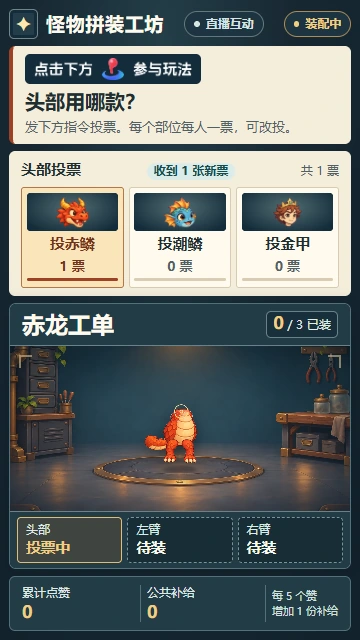
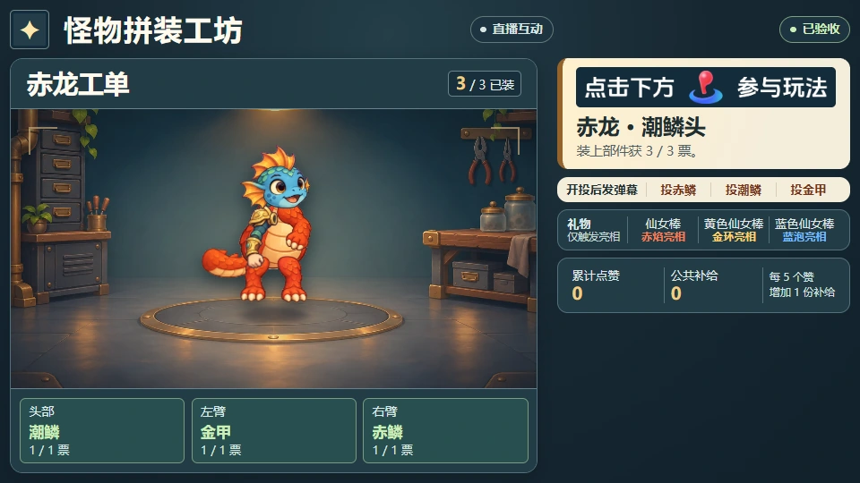
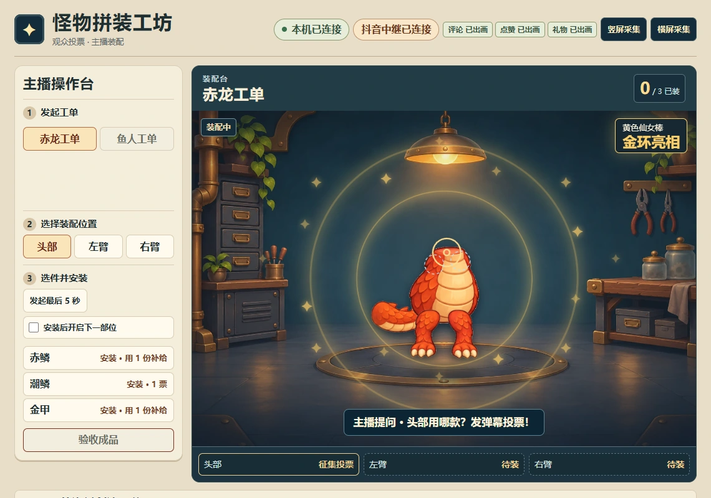

直播互动原型 / 部件拼装
怪物拼装工坊.
观众为怪物部件投票，主播推动开工、装配和验收。横屏与竖屏观众画面同步展示同一份成品。
Windows 调试版 · 本地互动验证
让投票立刻影响工坊
投票结果接到部件选择，装配后的怪物在两路观众画面中同步出现。竖屏把当前工序和投票反馈放在前景，横屏给成品亮相留出空间。




主播能看清互动卡在哪一步
主播台区分互动已接收、等待出画与已出画，测试互动单独标识。图为本地联调画面，真实直播间表现仍待试播验证。

